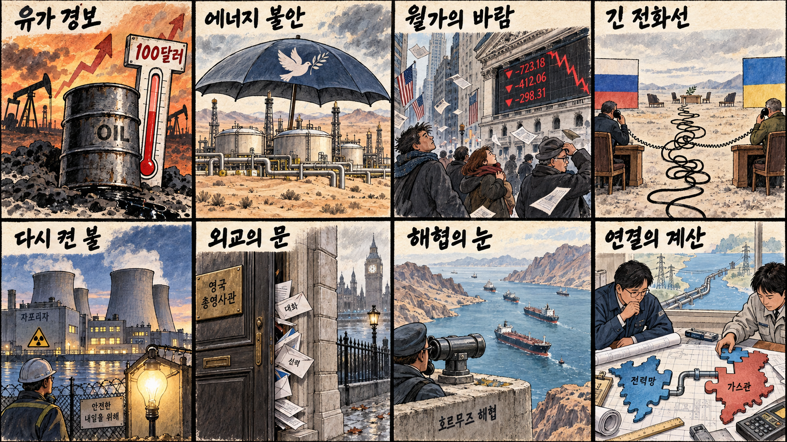
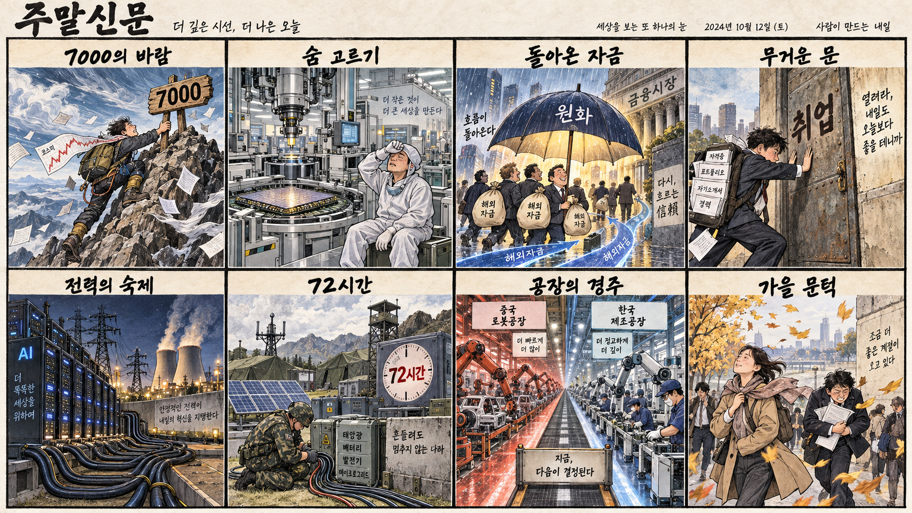

01
AMD · 488.88→505.74달러 · +3.45%
내용요약 시가 대비 3.45% 상승해 하락장 속 반도체 상대 강세를 기록했습니다.
예상여파 퀄컴·아마존 계약이 AI칩 공급망 다변화 기대를 자극했지만 국내 연결 종목의 갭 추격은 피해야 합니다.
MORNING_BRIEFING_20260909
작성 시각: 2026-09-09 06:41 KST · 직전 미국 정규장과 2026-09-09 KST 당일 공개 기사 기준
직전 미국 정규장인 9월 8일 뉴욕증시는 중동 에너지 시설 공격과 유가 급등 부담으로 동반 하락했습니다. 다우 -1.18%, S&P 500 -0.58%, 나스닥 -0.32%로 마감했고 반도체 안에서는 퀄컴·AMD·인텔의 상대 강세와 엔비디아·마이크론 약세가 엇갈렸습니다. 한국 증시는 유가 민감 업종 부담과 대형 반도체의 종목별 차별화를 함께 소화할 전망입니다.
| 지수 | 종가 | 등락률 | 한국 증시 시사점 |
|---|---|---|---|
| 다우존스 | 52,786.07 | -1.18% | 유가 상승 부담 · 방어적 선별 필요 |
| S&P 500 | 7,673.52 | -0.58% | 유가 상승 부담 · 방어적 선별 필요 |
| 나스닥 종합 | 26,421.41 | -0.32% | 유가 상승 부담 · 방어적 선별 필요 |
중동 공급 불안이 항공·운송·화학의 비용 압력을 높입니다.
다우 -1.18%로 경기민감주 부담이 상대적으로 컸습니다.
퀄컴·아마존 계약과 삼성·미스트랄 협력이 공급망을 넓힙니다.
필수 수급·컨센서스·확률 보정 문턱을 모두 통과한 후보가 없습니다.
9월 8일 보고서는 전일 급등 과열과 30건 이상 보정 표본, 필수 수급·컨센서스 검증 부족으로 공식 추천을 내지 않았습니다. 게시 당시 판단은 그대로 유지되며 사후 종목을 추가하지 않습니다.
| 시장 | 종가 | 등락률 | 기준 |
|---|---|---|---|
| KOSPI | 6,954.52 | -0.58% | 9월 8일 · 시가 대비 -1.30% |
| KOSDAQ | 811.88 | -1.25% | 9월 8일 · 시가 대비 -1.59% |
| 다우존스 | 52,786.07 | -1.18% | 미국 9월 8일 정규장 |
| S&P 500 | 7,673.52 | -0.58% | 미국 9월 8일 정규장 |
| 나스닥 종합 | 26,421.41 | -0.32% | 미국 9월 8일 정규장 |
퀄컴·아마존 대형 계약에 AMD와 인텔도 지수 대비 상대 강세를 보였습니다.
브렌트유 100달러 근접으로 정유·에너지 가격 모멘텀이 커졌습니다.
연료와 원재료 비용 상승이 마진 부담으로 연결될 수 있습니다.
엔비디아와 마이크론은 시가 대비 3% 넘게 하락해 차익실현 압력을 보였습니다.
내용요약 시가 대비 3.45% 상승해 하락장 속 반도체 상대 강세를 기록했습니다.
예상여파 퀄컴·아마존 계약이 AI칩 공급망 다변화 기대를 자극했지만 국내 연결 종목의 갭 추격은 피해야 합니다.
내용요약 시가 대비 3.61% 올라 미국 반도체주 안에서 견조한 흐름을 보였습니다.
예상여파 반도체 생산·정책 기대는 국내 장비·소재 심리를 지지할 수 있으나 기업별 고객과 공정 노출을 구분해야 합니다.
내용요약 시가 대비 3.05% 상승해 3대 지수 하락과 대비되는 개별 강세를 보였습니다.
예상여파 국내 이차전지 심리에 단기 우호적일 수 있지만 유가·금리·수요 지표를 함께 확인해야 합니다.
내용요약 시가 대비 3.21% 하락해 AI 대형주의 차익실현 압력을 드러냈습니다.
예상여파 국내 HBM주는 고객 수요의 장기성보다 단기 밸류에이션과 외국인 수급에 더 민감해질 수 있습니다.
내용요약 시가 대비 3.53% 하락해 메모리 업종의 높은 변동성이 이어졌습니다.
예상여파 삼성전자·SK하이닉스에는 단기 심리 부담이지만 실제 메모리 가격과 고객 인증 흐름을 우선해야 합니다.
미국 3대 지수 하락과 유가 100달러 근접은 국내 증시에 방어적 출발을 요구합니다. 전일 KOSPI는 장중 7,171.52까지 올랐다가 종가 6,954.52로 밀려 시가 대비 -1.30%를 기록했고, KOSDAQ도 -1.59%로 약했습니다. 정유·에너지는 유가 모멘텀을 받지만 항공·운송·화학은 비용 부담이 커질 수 있습니다. 반도체는 퀄컴·AMD·인텔과 엔비디아·마이크론의 엇갈린 흐름 때문에 지수 일괄 베팅보다 외국인 수급과 시초가 지지를 확인해야 합니다.
오늘은 추천 없음 — 현금 관망
전일까지의 외국인·기관 수급, 컨센서스 변화, 30건 이상 유사 조건 확률 보정과 예상 손익비 1.5 이상을 동시에 검증한 국내 종목이 없습니다. 장전 시가도 아직 형성되지 않아 점수와 확률을 임의로 만들지 않습니다.
관심 연결종목 정유·에너지, AI칩·첨단 패키징, 원전·송전망은 관찰 대상일 뿐 매수 추천이 아닙니다. 중동 뉴스나 장전 호재로 과도한 갭이 발생하면 추격매수 금지입니다.
KOSPI 6,950선과 대형 반도체의 시초가 지지, 외국인 선물을 확인합니다.
중동 시설 공격과 공급 차질 보도가 실제 선물가격에 이어지는지 봅니다.
계약 규모와 양산 일정, 파운드리·패키징 공급망을 점검합니다.
건설적 대화 평가가 회담 일정과 휴전 조건으로 구체화되는지 확인합니다.
핵심 요약: AI칩 경쟁은 퀄컴·아마존 동맹으로 넓어졌고 삼성은 미스트랄 투자로 제조 AI 협력을 강화했습니다. 동시에 HBM 수율, 데이터센터 전력과 온라인 인간 증명 보안이 성장의 병목으로 부상했습니다.
내용요약 퀄컴이 아마존과 최대 600억달러 규모의 차세대 AI칩 공급·개발 동맹을 맺고 신주인수권까지 연계했다는 당일 보도입니다.
예상여파 AI 가속기 공급망이 엔비디아 중심에서 다변화되며 설계·파운드리·패키징 경쟁과 클라우드 사업자의 자체칩 협상이 거세질 수 있습니다.
내용요약 삼성전자가 프랑스 생성형 AI 기업 미스트랄의 30억유로 투자 유치에 참여하고 제조 AI 협력을 넓힌다는 당일 보도입니다.
예상여파 소버린 AI와 반도체 공정 최적화의 결합은 유럽 사업 기회를 키우지만 투자 회수와 실제 공정 적용 성과를 확인해야 합니다.
내용요약 중국산 HBM의 낮은 수율 배경으로 TSV 공정 기술 격차가 지목됐다는 당일 보도입니다.
예상여파 국내 HBM·첨단 패키징 경쟁력에는 우호적이지만 고객 인증, 수율 개선 속도와 공급 확대 시점을 지속 점검해야 합니다.
내용요약 미국이 AI 전력 수요 대응을 위해 폐쇄 원전 듀안 아놀드 재가동에 19억달러를 투입한다는 당일 보도입니다.
예상여파 데이터센터 전력 확보가 원전 재가동과 송전망 투자로 이어져 원전·전력기기 수요를 지지할 수 있으나 인허가와 공사 일정이 변수입니다.
내용요약 AI가 48단계 인간 증명 테스트를 통과해 기존 봇 판별 도구의 취약성이 드러났다는 당일 보도입니다.
예상여파 보안·금융·온라인 서비스에서 신원 검증 비용이 높아지고 다중 인증과 행동 기반 탐지 투자가 확대될 수 있습니다.
핵심 요약: 중동 에너지 시설 공격으로 유가가 100달러에 근접한 가운데 호르무즈 안전 협력과 이스라엘·영국 외교 충돌이 교차합니다. 러·미 정상 통화와 자포리자 원전 전원 복구는 제한적 완화 신호입니다.
내용요약 중동 에너지 시설 공격이 이어지며 브렌트유가 장중 배럴당 100달러에 근접했다는 당일 보도입니다.
예상여파 에너지·정유에는 가격 모멘텀이지만 항공·운송·화학과 물가, 금리 경로에는 비용 압력이 커질 수 있습니다.
내용요약 푸틴 러시아 대통령과 트럼프 미국 대통령이 한 시간가량 통화했고 러시아가 건설적 대화라고 평가했다는 당일 보도입니다.
예상여파 후속 회담과 구체적 휴전 조건이 나오면 유럽 안보와 에너지 위험 프리미엄이 낮아질 수 있으나 발언만으로 낙관하기는 이릅니다.
내용요약 자포리자 원전의 외부 전원이 18일 만에 복구됐고 IAEA 중재 아래 국지적 휴전이 작동했다는 당일 보도입니다.
예상여파 원전 안전 위험은 완화됐지만 전력선과 주변 교전 재발 여부가 유럽 에너지·안보 심리의 핵심 변수입니다.
내용요약 이스라엘이 영국의 정착촌 제재에 맞서 동예루살렘 영국 총영사관을 폐쇄했다는 당일 보도입니다.
예상여파 가자·정착촌 문제를 둘러싼 서방 내부의 외교 마찰이 커져 추가 제재와 보복 조치 가능성이 높아질 수 있습니다.
내용요약 프랑스 대통령이 한국과 호르무즈 해협의 평화적 임무에 협력하겠다는 뜻을 밝혔다고 전한 당일 보도입니다.
예상여파 해상 안전 협력이 공급 불안을 낮출 수 있지만 파병 범위와 비용, 중동 당사국과의 외교 조율이 필요합니다.

핵심 요약: 원화 강세와 한·프 AI 협력은 자금·산업 측면의 기회지만 청년 고용의 체감 격차는 남아 있습니다. 전력망 실증과 선선해진 날씨·강풍까지 산업과 일상을 함께 점검합니다.
내용요약 원화 강세와 환율 하락을 계기로 외국인 자금이 코스피로 돌아오는 가운데 자사주 효과 이후의 시장 방향을 짚은 당일 분석입니다.
예상여파 환율 안정은 대형주 수급에 우호적이지만 전일 장중 7,000선 돌파 뒤 변동성이 커 선물·현물 동반 순매수 지속 여부가 중요합니다.
내용요약 삼성전자가 프랑스 AI 기업 미스트랄에 수천억원을 투자해 한·프 첨단기술 협력을 강화한다는 당일 보도입니다.
예상여파 국내 반도체와 제조 AI의 유럽 진출 기대를 높이지만 단기 주가보다 공동 제품과 매출 전환 시점을 확인해야 합니다.
내용요약 경제 성장과 1인당 소득 개선에도 청년층을 중심으로 고용 체감이 약한 구조를 다룬 당일 기사입니다.
예상여파 소득 지표와 고용의 괴리가 길어지면 소비 회복이 제한될 수 있어 양질의 일자리와 생산성 투자 정책이 중요해집니다.
내용요약 에너지공단과 육군이 상무대에 고정형·이동형 설비를 결합한 국내 첫 하이브리드 마이크로그리드를 구축한다는 당일 보도입니다.
예상여파 재난·안보 상황의 분산전원 수요가 ESS·전력제어·마이크로그리드 실증과 조달 시장 확대로 이어질 수 있습니다.
내용요약 찬 공기 유입으로 서울 낮 기온이 27도에 머물고 강릉은 23도로 낮아지는 한편 동해안 비와 강풍이 예보됐습니다.
예상여파 큰 일교차와 강풍에 대비하고 동해안 이동·시설물 안전과 농작물 관리에 유의해야 합니다.
